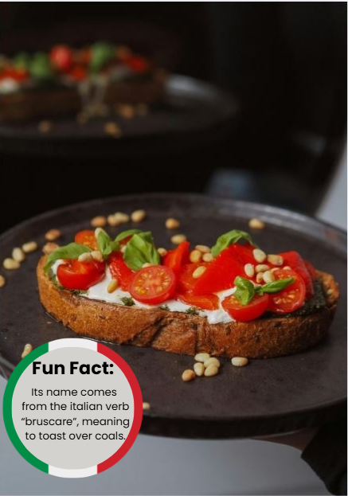

|  |
IngredientiExtra-Virgin Olive Oil & Butter Filet Mignon Salt Pepper Rosemary |
Ricetta-Gather all ingredients. Preheat the oven to 400 degrees F (200 degrees C). -Brush bread slices on both sides lightly with 1 tablespoon oil and place on large baking sheet. Toast bread until golden, about 5 to 10 minutes, turning halfway through. -Meanwhile, toss together tomatoes, basil, Parmesan cheese, and garlic in a bowl. -Mix in balsamic vinegar, 2 teaspoons olive oil, kosher salt, and pepper. -Spoon tomato mixture onto toasted bread slices. Serve immediately and enjoy! |